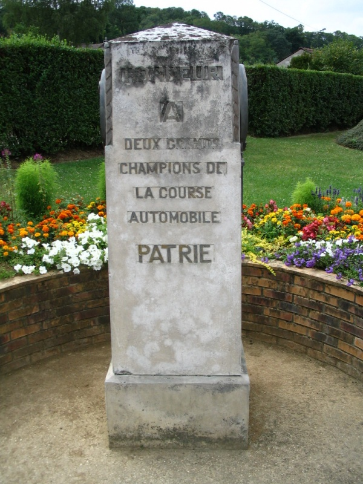
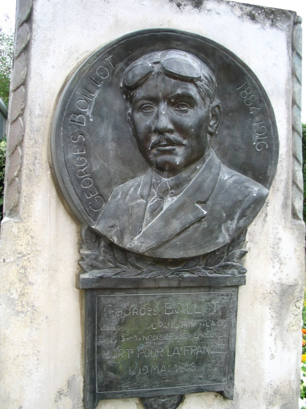
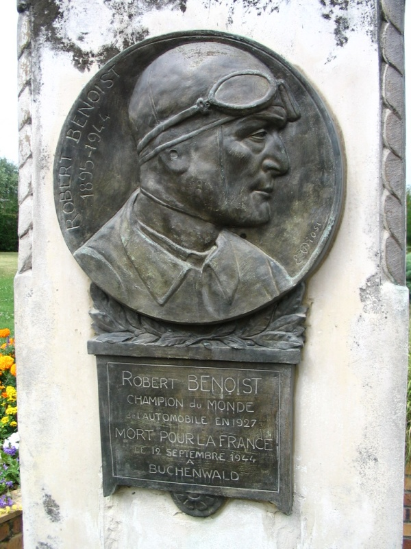

The Motorsport Memorial website
Motor Sport Monuments and Memorials - Montlhéry, France
| This is a Montlhéry monument built on the right side of the road climbing to the track, at a crossroad, at about 500m before the circuit gate. Not easy to see. | |
 |
|
| Front side. The inscription reads: | |
| English Translation | |
DEUX GRANDS |
TWO GREAT |
 |
|
| Right side of the Montlhery memorial. | |
| English Translation: | |
GEORGES BOILLOT |
GEORGES BOILLOT |
 |
|
| Left side of the Montlhery memorial. | |
| English Translation: | |
ROBERT BENOIST |
ROBERT BENOIST |
The Motorsport Memorial website